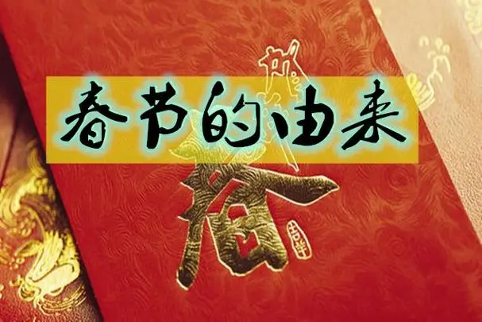

一、历史背景春节起源于中国古代的农耕社会，与农业文明、祭祀活动和阴阳历的使用有着密切的关系。农耕社会中，春天是一个重要的季节，人们庆祝春节的目的是迎接新年、祈求丰收和祭祀祖先。
二、春节的起源与演变
祭祀太岁：春节最早的起源与祭祀太岁有关。太岁是中国古代农耕社会的守护神，人们相信太岁掌管着一年的祸福和运势。为了祈求太岁的保佑和祝福，人们在每年农历腊月初一会举行祭祀仪式，以祈求新年的平安和吉祥。
驱除邪灵和年兽：另一种说法是春节起源于驱除邪灵和年兽的传统。据传说，年兽是一种凶猛的怪兽，喜欢袭击村庄和伤害人畜。人们发现年兽畏惧红色、火光和响声，于是在每年农历腊月初一时点燃火把、放鞭炮，穿红色的衣服，以驱赶年兽和邪灵，保护自己和家人的安全。
春龙舞蹈：春节还与舞龙有关。传说舞龙起源于古代的驱邪活动，人们认为龙是神秘的生物，具有驱邪辟邪的能力。为了迎接新年、驱赶邪气和祈求丰收，人们会在每年农历腊月初一时表演舞龙，以祈福和庆贺。
祭祖和家族聚会：春节也与祭祖和家族聚会有关。中国人非常重视家庭和亲情，春节是一个重要的团聚时刻。人们会在春节期间回到家乡，与家人团聚，祭祀祖先，表达对祖先的敬意和思念。这种祭祀和家族聚会的传统延续至今，成为春节的重要习俗之一。